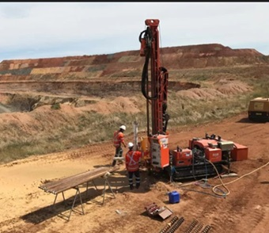
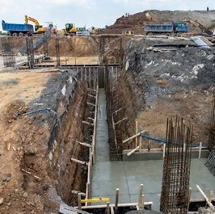
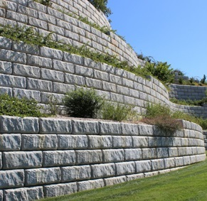
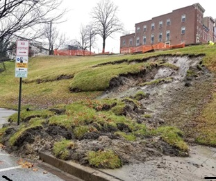

Geotechnical Engineering
Our Geotechnical Engineering Services
We provide comprehensive geotechnical engineering services across all industry sectors. Our staff has extensive experience and expertise in geotechnical investigations and geotechnical engineering. Below is a list of services in geotechnical engineering and consulting we provide.
- Geotechnical site investigations and studies
- Deep and shallow foundation engineering
- Excavation support systems, retaining walls, and shoring design
- Slope stability evaluations and instability mitigation design
- Numerial modeling, finite elemenet and finite difference modeling
- Erosion issues mitigation
- Settlement assessment and mitigation design
- Seepage evaluations
- Ground improvement techniques
- seismic and earthquake engineering, learn more here
Our Expertise
Geotechnical Site Investigations
At ABG, we have extensive experience planning and performing geotechnical site investigations that support informed engineering decisions and successful project outcomes. Our team develops project-specific investigation programs based on site conditions, project objectives, and risk considerations. We utilize a range of drilling techniques, in-situ testing methods, and geophysical approaches, selecting the most appropriate tools for each project to characterize subsurface conditions effectively. Through careful planning, field execution, and interpretation of results, our investigations provide reliable subsurface data to support design, evaluate geotechnical risks, and inform practical, cost-effective engineering solutions.
Foundation Engineering
Our foundation engineering expertise supports reliable and resilient infrastructure projects. We meticulously plan, perform, and report comprehensive geotechnical site investigations for buildings, bridges, roadways, and diverse sites, providing actionable insights into soil and subsurface conditions. Our services include both shallow and deep foundation solutions tailored to project requirements: from spread footings and mat foundations for shallow applications to detailed design and analysis of piles and drilled shafts using ASD or LRFD methodologies for deep foundations. With proven experience in challenging subsurface conditions—from soft, compressible soils to liquefiable zones—we develop practical, cost-effective designs that address site-specific risks and support long-term structural performance.
Retaining Walls and Shorings
We provide comprehensive geotechnical design services for retaining walls and excavation support systems of all types and complexities. Our expertise includes permanent and temporary retaining structures such as modular block walls, cast-in-place and cantilevered concrete walls, soldier pile and lagging systems, sheet piles, soil nail walls, mechanically stabilized earth (MSE) walls, and specialty shoring, bracing, and tieback systems. From shallow residential applications to deep, constrained urban excavations, we deliver safe, constructible, and cost-effective designs tailored to site-specific subsurface conditions and project requirements.
Slope Stability Evaluations and Mitigation
Our firm provides comprehensive slope stability evaluation and design services for both natural and man-made slopes. We assess existing slope conditions, identify potential failure mechanisms, and perform forensic investigations of slope instability, landslides, and distress. Using site-specific geotechnical data, we evaluate current and future stability conditions and develop practical mitigation measures to reduce risk and improve performance. Depending on project complexity, our analyses range from conventional limit equilibrium methods to advanced numerical modeling techniques for complex geometries, soil–structure interaction, and groundwater conditions.